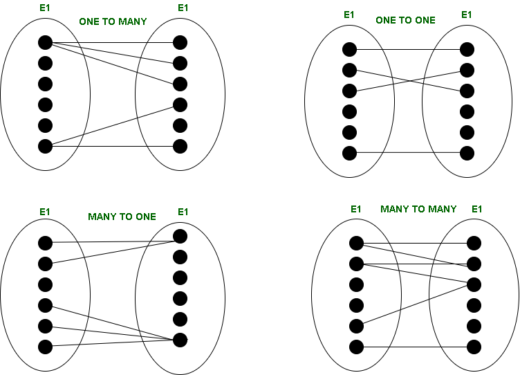

Проектирование баз данных и ER-моделирование
1. Этапы проектирования баз данных
2. Модель «сущность связь» (ER-модель)
3. Типы связей между сущностями
1. Этапы проектирования баз данных
Проектирования баз данных представляет собой ключевой этап создания информационных систем, от которого напрямую зависит корректность хранения данных, удобство их обработки и эффективность дальнейшей эксплуатации. Ошибки, допущенные на ранних стадиях, как правило, приводят к значительным затратам при доработке системы или даже к необходимости полной переработки архитектуры.
Процесс разработки базы данных нельзя свести к единственному действию – он включает последовательность взаимосвязанных шагов, каждый из которых уточняет и конкретизирует предыдущий результат. Обычно выделяют несколько уровней проектирования, отличающихся степенью абстракции. Прежде всего формируется представление о предметной области. На этом этапе важно не просто собрать требования, но и понять, какие объекты играют ключевую роль, какие характеристики для них существенны и каким образом они взаимодействуют между собой.
Далее осуществляется переход от абстрактного описания к формализованной модели. Именно здесь появляется необходимость в использовании специальных методов, позволяющих структурировать информацию.
Анализ предметной области
Начальная стадия включает детальное изучение той части реальности, которая подлежит формализации. В отличие от поверхностного сбора требований, данный этап предполагает глубокое погружение в контекст функционирования будущей системы.
Прежде всего выявляются участники процессов, их роли и взаимодействия. Например, в образовательной системе это могут быть студенты, преподаватели, дисциплины, учебные планы. При этом важно не только перечислить объекты, но и зафиксировать правила их поведения.
Особое внимание уделяется следующим аспектам:
— определение границ системы (что включается в модель, а что остаётся за её пределами);
— выявление бизнес-правил и ограничений;
— анализ существующих документов и потоков данных;
— согласование терминологии, чтобы избежать неоднозначностей.
Нередко используются интервью с экспертами, анализ документации, наблюдение за рабочими процессами. Ошибки на этом этапе могут привести к искажению всей последующей структуры, поэтому его значимость трудно переоценить.
Результатом становится структурированное описание предметной области, которое служит основой для концептуального моделирования.
Концептуальное проектирование
На данной стадии происходит переход от текстового описания к формализованной модели данных. Основная цель – представить информацию в виде абстрактной схемы, отражающей сущности, их свойства и взаимосвязи.
В отличие от последующих этапов, здесь полностью игнорируются особенности конкретных систем управления базами данных. Такой подход позволяет сосредоточиться на логике предметной области, не ограничивая себя техническими деталями.
Ключевые задачи этапа:
— выделение сущностей и их атрибутов;
— определение идентификаторов (ключей);
— установление связей между объектами;
— задание ограничений целостности.
Модель «сущность-связь» применяется как основной инструмент визуализации. Она помогает не только структурировать данные, но и выявить противоречия или пробелы в исходных требованиях.
Важно, что концептуальная схема должна быть понятна не только разработчикам, но и специалистам предметной области. Это позволяет использовать её как средство коммуникации и согласования.
Логическое проектирование
После формирования концептуальной модели осуществляется её преобразование в логическую структуру, соответствующую выбранной модели данных. В большинстве случаев речь идёт о реляционном подходе.
На этом этапе абстрактные сущности превращаются в таблицы, а связи получают конкретное представление через ключи и ограничения.
Процесс включает несколько важных шагов:
— преобразование сущностей в отношения;
— выбор первичных ключей;
— реализация связей (через внешние ключи или промежуточные таблицы);
— уточнение типов атрибутов;
— устранение избыточности.
Особое место занимает нормализация – последовательное приведение структуры к нормальным формам. Эта процедура направлена на уменьшение дублирования данных и предотвращение аномалий вставки, обновления и удаления.
Следует отметить, что логическая модель уже значительно ближе к реализации, однако всё ещё сохраняет независимость от конкретной СУБД.
Физическое проектирование
На заключительном этапе предполагается адаптация логической схемы к конкретной платформе хранения данных. Здесь принимаются решения, непосредственно влияющие на производительность и надежность системы.
На данном уровне определяются:
— типы данных с учетом возможностей СУБД;
— структура индексов для ускорения поиска;
— способы хранения (например, кластеризация таблиц);
— механизмы обеспечения целостности и безопасности.
Физическое проектирование требует баланса между производительностью и затратами ресурсов. Например, увеличение числа индексов ускоряет выборку, но замедляет операции обновления.
2. Модель сущность-связь
Современные системы управления базами данных (СУБД) часто оперируют данными без понимания их смысловой нагрузки. СУБД воспринимают данные без контекста, в котором эти данные находятся.
Основная ответственность за конкретную интерпретацию данных лежит на пользователе. Однако было бы полезно, если бы СУБД могли обладать более развитыми метаданными и могли бы анализировать запросы с учетом семантики хранимой информации.
Например, система могла бы распознавать, что оценка за экзамен и номер аудитории, хотя и представлены числами, но семантически разными величинами. Это позволило бы ей предупреждать пользователя или даже блокировать запросы соединения данных, где оценка сравнивается с номером аудитории.
Даже если СУБД не поддерживают семантическое моделирование напрямую, его принципы остаются ценными при проектировании базы данных. Оно вносит осмысленность в структуру базы данных. Из основных концепций модели сущность-связь относятся:
— Сущность;
— Свойства сущности;
— Идентичность сущности;
— Экземпляр сущности;
— Связи.
Сущность – это объект реального или абстрактного мира, обладающий самостоятельным существованием. Например, студент, заказ или товар.
Каждая сущность описывается набором атрибутов, которые отражают ее свойства
Применение семантического подхода происходит благодаря ER-модели, которая была предложена в 1976 году Питером Ченом. Er-моделирование не эквивалентно термину семантического моделирования, а является лишь его вариантом.
Визуальное представление ER-модели называется ER-диаграмма. Проектирование предметной области основывается на применении визуальных диаграмм, которые состоят из ограниченного набора разнотипных элементов. Благодаря удобству и понятности отображения концептуальных структур баз данных, ER-модель получила широкое применение в CASE-средствах, которые используются для автоматизированного создания баз данных.
3. Типы связей и их виды
<р>В первоначальном варианте Питера Чена сущности представляются прямоугольниками. Свойства сущностей представлены в виде овалов, а связи между сущностями заключены в ромб. Сущности и их свойства соединены между собой.Элементы ER-диаграммы в нотации Питера Чена соединяются линиями. Ели линия соединяет две сущности, сверху обозначают тип связи:
— 1:1 – один-к-одному – когда каждая сущность в обоих наборах сущности учувствует в связи не более одного раза.
— 1: N – один-ко-многим – если сущности из первого набора учувствует в связи не более одного раза, а сущности из второго набора – многократно (как минимум дважды).
— M: M – многие-ко-многим – если сущности в обоих наборах участвуют в связи многократно (как минимум дважды).
— M: 1 – многие к одному – если сущности из первого набора участвуют в связи многократно (как минимум дважды), а сущности из второго набора не более одного раза.

Связь отражает взаимодействие или зависимость между сущностями. Например, студент может быть связан с курсом через факт обучения.
Связи характеризуются:
— степенью (обычно бинарные);
— мощностью (один-к-одному, один-ко-многим, многие-ко-многим);
— обязательностью участия.
Правильное определение связей имеет критическое значение, поскольку именно они задают структуру будущей базы данных.
Проектирование баз данных представляет собой ключевой этап создания информационных систем, от которого напрямую зависит корректность хранения данных, удобство их обработки и эффективность дальнейшей эксплуатации, причём ошибки, допущенные на ранних стадиях, как правило, приводят к значительным затратам на доработку или даже к полной переработке архитектуры.
Процесс разработки базы данных включает последовательность взаимосвязанных шагов с разной степенью абстракции: начиная с анализа предметной области (глубокое погружение в контекст, выявление участников, бизнес-правил, границ системы и согласование терминологии), затем осуществляется концептуальное проектирование, где происходит переход к формализованной модели с полным игнорированием особенностей конкретных СУБД, что позволяет сосредоточиться на логике предметной области.
Далее следует логическое проектирование, в рамках которого абстрактные сущности преобразуются в таблицы, связи получают представление через ключи и ограничения, а особое место занимает нормализация для устранения избыточности и предотвращения аномалий. Заключительным этапом выступает физическое проектирование, предполагающее адаптацию логической схемы к конкретной платформе хранения данных с определением типов данных, структуры индексов, способов хранения и механизмов обеспечения целостности и безопасности, что требует баланса между производительностью и затратами ресурсов.
Центральным инструментом концептуального проектирования выступает модель «сущность-связь» (ER-модель), предложенная Питером Ченом в 1976 году, которая визуально представляется в виде ER-диаграммы, где сущности изображаются прямоугольниками, их свойства (атрибуты) — овалами, а связи между сущностями — ромбами. Связи характеризуются степенью (обычно бинарные), мощностью (один-к-одному (1:1), один-ко-многим (1:N), многие-ко-многим (M:N)) и обязательностью участия, причём правильное определение связей имеет критическое значение, поскольку именно они задают структуру будущей базы данных. Благодаря удобству и понятности отображения концептуальных структур, ER-модель получила широкое применение в CASE-средствах для автоматизированного создания баз данных, а её принципы остаются ценными даже при работе с СУБД, которые не поддерживают семантическое моделирование напрямую.
Контрольные вопросы по лекции
1. Перечислите и кратко охарактеризуйте все четыре этапа проектирования баз данных, указав, чем каждый этап отличается от предыдущего и какой результат на нём достигается.
2. Что представляет собой модель «сущность-связь» (ER-модель), кто и в каком году её предложил?
3. Какие существуют типы связей между сущностями?
4. Почему анализ предметной области считается самым критическим этапом проектирования?